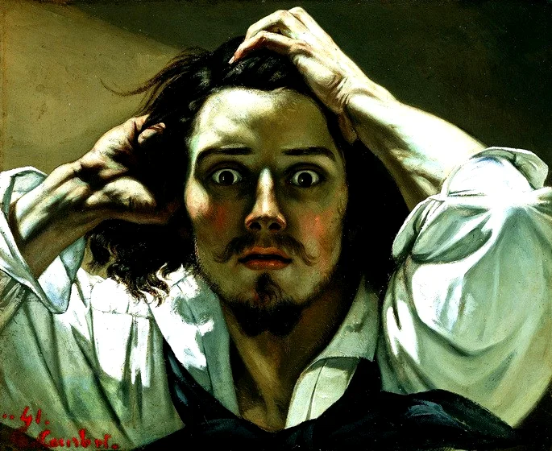
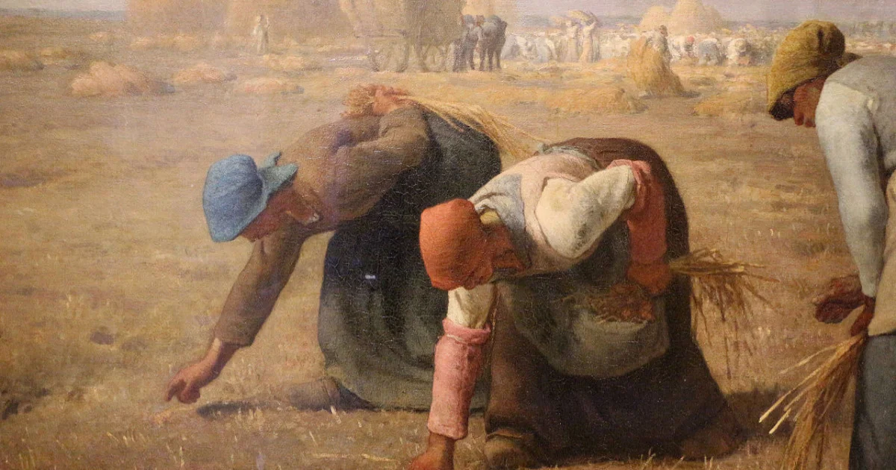

O realismo foi um movimento literário e artístico que teve início em meados do século XIX, na França. Como o próprio nome sugere, essa manifestação cultural significou um olhar mais realista e objetivo sobre a existência e as relações humanas, surgindo como oposição ao romantismo e sua visão idealizada da vida. A vertente se manifestou principalmente na literatura, sendo seu marco inicial o romance realista Madame Bovary, de Gustave Flaubert, em 1857.
Características
- oposição ao romantismo;
- objetividade, trazendo cenas e situações de forma direta;
- caráter descritivo;
- análise de traços de personalidade e da psique das personagens;
- tom crítico sobre as instituições e a sociedade, sobretudo a elite;
- exibição de falhas de caráter, derrotas pessoais e comportamentos duvidosos;
- interesse em incitar questionamentos no público;
- valorização da coletividade;
- valorização de conhecimentos científicos propostos em teorias como o Darwinismo, Socialismo Utópico e Científico, Positivismo, Evolucionismo;
- enfoque em temas contemporâneos e cotidianos;
- na literatura desenvolveu-se mais intensamente na prosa e no conto;
- caráter de denúncia social.

